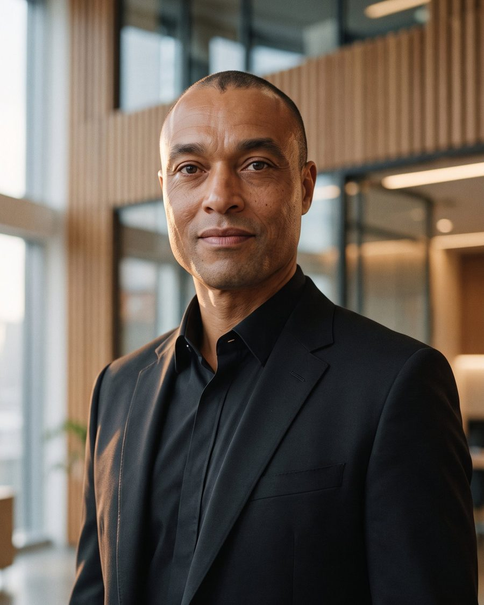

Inteligência artificial construída pelo próprio neonatologista. Uma imersão presencial, o acompanhamento da turma e uma série nacional de cinco aulas.
Na imersão, cada neonatologista sai com ferramentas que ele mesmo construiu, já funcionando na própria UTIN.
A mesma metodologia (AIMED) e o mesmo repertório de casos neonatais atravessam as três frentes. Se a série acontecer antes da imersão, a turma presencial chega conhecendo os debates.
Cinco aulas ao vivo de 60 minutos, assistidas em grupo em várias cidades. Todas gravadas.
Sessão online de 45 minutos: contas criadas, ambiente testado e o problema de cada um definido.
Até 15 neonatologistas, cada um no próprio notebook, com mentoria em trios.
Cada participante mostra a ferramenta funcionando na própria unidade, como apoio e com conferência do médico.
Cada bloco é um módulo, com largura proporcional à duração. A fileira da frente é o dia 1; a de trás, o dia 2.
Apresentação dos participantes e do problema que cada um trouxe para resolver.
Os cinco componentes do pedido clínico (Assistente, Informação, Missão, Estrutura, Diretrizes), com um caso de prematuro de 28 semanas em três níveis de profundidade.
Cada participante configura a IA uma única vez como neonatologista do seu tipo de unidade.
Cada trio recebe uma controvérsia e escreve o prompt que manda a IA defender o lado oposto. A discussão só volta no dia seguinte.
Evolução ditada no round e passagem de plantão estruturada a partir da fala.
Quando basta um pedido, quando vale uma Skill, um projeto ou um agente.
Cálculos da UTIN transformados em Skills reutilizáveis, e uma ferramenta completa construída ao vivo: o limiar de fototerapia pelo nomograma AAP 2022.
O trajeto do cateter umbilical em três dimensões, acoplado ao cálculo da profundidade de inserção.
Cada participante começa a ferramenta do próprio caso.
A dúvida da controvérsia vira pergunta pesquisável (PICO) e busca real. Os ensaios vão para o Gemini Notebook, que responde citando o trecho de cada fonte.
Cowork, ChatGPT Work e Gemini Spark: o que faz uma ferramenta agir sozinha e quando isso é seguro. Caso real: um sistema de gestão de leitos neonatais em funcionamento.
Resolução CFM nº 2.454/2026: registro em prontuário, informação aos pais, responsabilidade, LGPD. Com um exercício em duplas de comunicação com os pais à beira da incubadora.
Finalização e teste de cada ferramenta.
Cada trio apresenta o veredicto sobre a sua controvérsia.
Cada participante mostra a própria ferramenta funcionando, em até 2 minutos, e sai com o plano dos próximos 7 dias.
O formato vem da turma de Goiânia, em setembro de 2026. O que funcionou melhor foi cada participante chegar com a própria dor para resolver: o balanço hídrico refeito a cada plantão, o escore z de um ecocardiograma, o laudo que se repete toda semana.
Ferramentas usadas: ChatGPT, Claude, Gemini e Gemini Notebook (antigo NotebookLM). Quando existe versão gratuita, ela aparece primeiro.
As ferramentas de IA mudam rápido. O programa pode ser atualizado até a data do evento, sem alterar carga horária nem objetivos.
Esta calculadora de taxa de infusão de glicose foi construída com o método ensinado no laboratório. Mexa nos valores: o resultado vem sempre com a conta, para o médico conferir antes de usar.
Demonstração educacional. Não substitui a prescrição nem a conferência pelo médico responsável.
Cada trio defende uma posição e pede à IA que argumente, com evidência, o lado oposto. Toque numa controvérsia para ver os dois lados.
Nenhuma controvérsia do curso trata de alimentação ou nutrição enteral.
Grupos de neonatologistas reunidos em várias cidades, por volta das 19h, diante de uma tela grande. O instrutor demonstra durante 45 minutos e responde às perguntas das cidades nos 15 seguintes. A Nestlé organiza os encontros, e todas as aulas são gravadas e editadas em capítulos.
Na última aula, as cinco perguntas éticas aparecem juntas na tela. Em todas elas, a responsabilidade final é do médico.
Cursos introdutórios ensinam a escrever bons pedidos à IA. O AIMED Neonatal parte desse ponto e vai até a ferramenta construída pelo próprio neonatologista.
O valor é fechado por turma de até 15 participantes, e a Nestlé escolhe quem cuida da logística.
Local, infraestrutura, cafés e pessoa de apoio por conta da INOVAMED. Somente para imersão em Joinville.
A Nestlé organiza o evento, em qualquer cidade.
Fora de Joinville, deslocamento e hospedagem do instrutor ficam a cargo da Nestlé. A série nacional de cinco aulas tem valor sob consulta, definido com o calendário e o número de cidades. Condições de pagamento a combinar.
O conteúdo trata exclusivamente de IA aplicada à prática médica. Nenhuma aula ou material menciona produtos ou marcas da Nestlé, nem trata de alimentação infantil, e o enquadramento institucional dos eventos na NBCAL (Lei nº 11.265/2006) fica a critério da Nestlé. A metodologia, os prompts, as Skills e as ferramentas do curso são propriedade intelectual da INOVAMED. Nenhum dado identificável de paciente é usado em aula.

Dr. Mbula Luzingu Barros constrói as tecnologias de que fala.
Médico intensivista pediátrico, com mais de 25 anos de atuação em terapia intensiva. Desenvolveu sistemas e robôs de inteligência artificial hoje em uso na rede pública de saúde de Santa Catarina: gestão de leitos neonatais, vigilância epidemiológica, cirurgia segura, fluxos de recursos humanos. O sistema de gestão de leitos neonatais foi apresentado no Hackathon de Harvard (hub Brasília).
Em 2023, criou e publicou na Play Store um aplicativo médico voltado ao autismo, que em 2024 evoluiu para o portal inovamed.pro. Criador da metodologia AIMED, ministra cursos de IA para médicos e equipes multiprofissionais desde agosto de 2024, com turmas em Joinville, Goiânia e Recife.
Usou a IA como método de estudo e conquistou o 1º lugar no concurso estadual para médico pediatra de Santa Catarina, experiência documentada no livro 100 Pontos, publicado na Amazon.
Por construir inteligência artificial para a saúde, conhece de perto os limites que ela precisa respeitar.